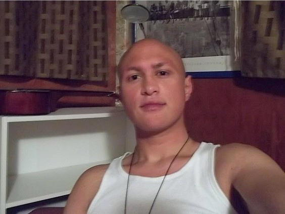
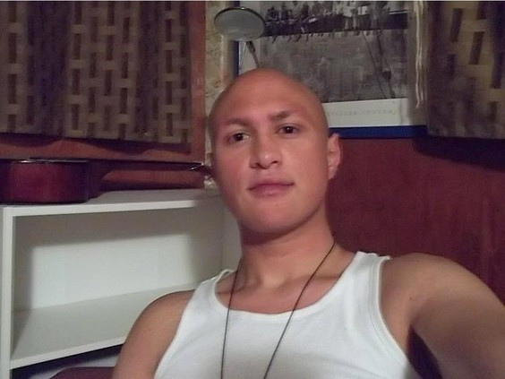
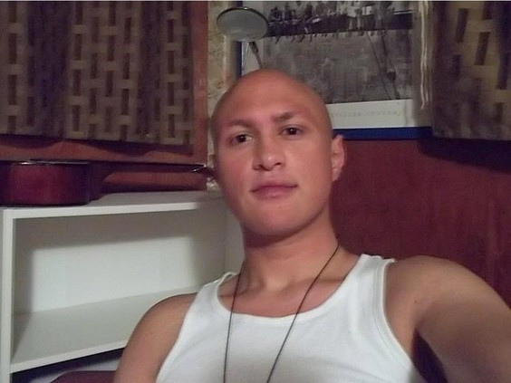

Anti-White ex PSAC vice-president attacked by stepson during triple stabbing (2016)
June 26th, 2021
Ottawa Citizen
TDC_ARTICLE_START
A former public service union vice-president was allegedly attacked by his stepson in a triple stabbing that police believe was a violent mental health episode just days after the suspect was released from hospital.
John Baglow — a former vice-president of the Public Service Alliance of Canada — was taken to hospital on a stretcher Thursday afternoon from his Simcoe Street home with stab wounds to his hands and head. He was in stable condition.
TDC_ARTICLE_STOP
Oh wait, he got better? Well that sucks.
John Baglow
For those who don't know, John Baglow is the anti-White who wrote White People have no right to criticize Yusra Khogali's anger, an article where he vaguely hints at bad things Yusra Khogali might have done or said to White people, before making sure that White People understand that getting mad at anti-Whitism, or as he calls it "justified anger," is the real problem. If you're curious what Yusra Khogali said, I wrote an article on it here, which you should read. Here's a choice quote of Khogalis.
TDC_ARTICLE_START
whiteness is not humxness. infact, white skin is sub-humxn.
...
melanin enables black skin to capture light and hold it in its memory mode which reveals that blackness converts light into knowledge. melanin directly communicates with cosmic energy.
TDC_ARTICLE_STOP
Penni Richmond – who was in the home at the time — was slashed in the throat and was listed in critical condition. Richmond is the former national director of women’s and human rights at the Canadian Labour Congress.
TDC_ARTICLE_START
 Unfortunately she recovered. Fortunately she died in 2020. I hope that this privileged cunt, who dedicated her life to pushing Harvey Weinstein's Feminism had a very painful last few years on this planet.
TDC_ARTICLE_START
Baglow’s stepson, Danny MacKinnon, who police allege attacked the pair, suffered self-inflicted stab wounds to his chest. MacKinnon was also in critical condition.
TDC_ARTICLE_STOP

Unfortunately she recovered. Fortunately she died in 2020. I hope that this privileged cunt, who dedicated her life to pushing Harvey Weinstein's Feminism had a very painful last few years on this planet.
TDC_ARTICLE_START
Baglow’s stepson, Danny MacKinnon, who police allege attacked the pair, suffered self-inflicted stab wounds to his chest. MacKinnon was also in critical condition.
TDC_ARTICLE_STOP
Danny MacKinnon
Hmmm. Stepson. That's interesting. I'm suspicious that Baglow is an anal-fetishist, but he's of the era where they still got wives to present well. I mean, he could be normal, I think it's 50-50.
Nevermind, apparently he's his stepson from a previous marriage. Scratch the buttpirate allegations. "I'm grieving over my widow," is a great excuse for a buttpirate to use when explaining why he's never re-married. Faggots don't remarry with women.
TDC_ARTICLE_START
Baglow has written numerous political and current affairs opinion pieces for the National Post and has been published in the pages of the Citizen. Baglow is also a well-known blogger who goes by the moniker Dr. Dawg. Last year, a Superior Court justice found Baglow had been defamed on a Conservative message board but that the comment, which attacked Baglow’s support of Omar Khadr, was fair comment in the context of the contentious political blogosphere.
TDC_ARTICLE_STOP
Baglow again
Glancing through his propaganda pieces, you can see a clear anti-White pattern forming. However he does also have the occasional anti-Jew Ethnostate article, which I find quite interesting. It's sort of like a far more anti-White and pro-Child Abuse version of Jimmy Dore, where there seems to be honestly something to the anti-war angle he's pushing. Unlike Dore, I have zero desire to excuse his behaviour of course. No one who writes "White People have no right to be angry," at someone who refers to White People as "sub-humxn," deserves any amount of praise.

Unfortunately she recovered. Fortunately she died in 2020. I hope that this privileged cunt, who dedicated her life to pushing Harvey Weinstein's Feminism had a very painful last few years on this planet.
TDC_ARTICLE_START
Baglow’s stepson, Danny MacKinnon, who police allege attacked the pair, suffered self-inflicted stab wounds to his chest. MacKinnon was also in critical condition.
TDC_ARTICLE_STOP
